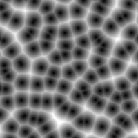
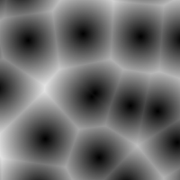
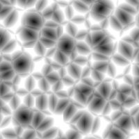
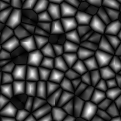
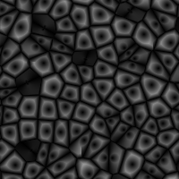
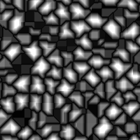
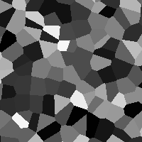

Worley Noise
The Worley Noise node creates 2D noise values. You can
choose between euclidean an manhattan distance calculation or
select the voronoi option.
Input:
|
scale
|
The scale of the noise. (> 1)
|
|
seed
|
An offset for x and z. (lower than float.MaxValue)
|
Output:
|
noise
|
The noise value. (between -1 an 1)
|
|
points
|
The points that are used for the noise.
|
Internal Request:
Uses x and z as function parameters.
Uses seed to modify the seed input.
Euclidean First scale 20

Euclidean First scale 60

Euclidean Second scale 20

Euclidean Second - First scale 20

Euclidean Min Second - First scale 20

Manhattan Second - First scale 20

Voronoi scale 20
